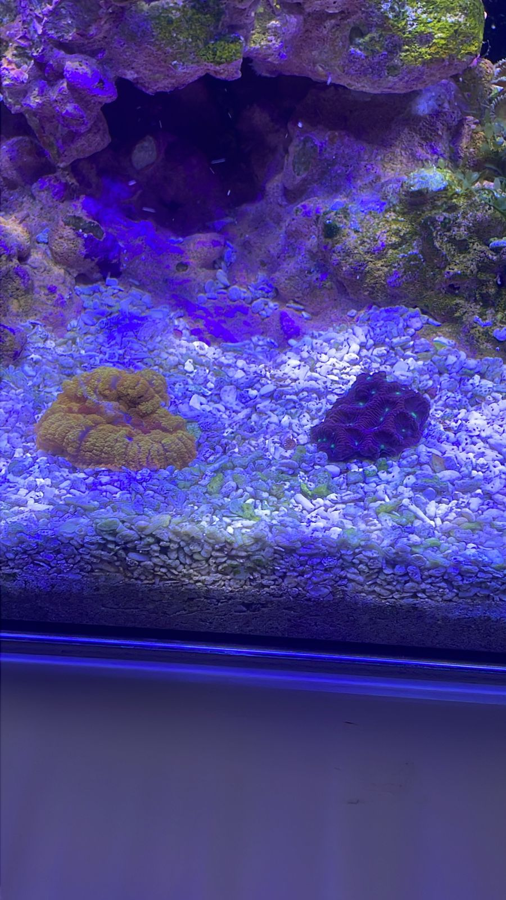

مرحبًا بك في عالم البرمجة
خطوات تعلم HTML:
- التعرف على الهيكل العام للصفحة
- كتابة الوسوم الأساسية
- تنسيق النصوص والعناوين
- إدراج الصور والروابط
- استخدام التعليقات وتحسين التنسيق
أدوات مهمة للمطورين:
- VS Code
- Chrome DevTools
- GitHub
- Live Server
- W3Schools
لغات البرمجة للفرونت إند:
الفرونت إند هو الجزء الظاهر للمستخدم في أي موقع أو تطبيق، ويتم بناؤه باستخدام عدة لغات رئيسية:
- HTML: تُستخدم لبناء هيكل الصفحة وتحديد العناصر.
- CSS: تُستخدم لتنسيق وتصميم شكل الصفحة مثل الألوان والخطوط.
- JavaScript: تُستخدم لإضافة التفاعلية مثل الأزرار والقوائم المنبثقة.
للمزيد من المعلومات، قم بزيارة موقع Red Sea Aquariums.
معرض صور المرجان:
مرجانا زوانثيد

مرجان الفطر الاصفر ومرجان العقل الصخري.
لقطة قريبة لمرجان ناعم الشكل.

صورة لشقائق النعمان
تم الإنشاء بواسطة عبدالله - اليوم الأول من التدريب